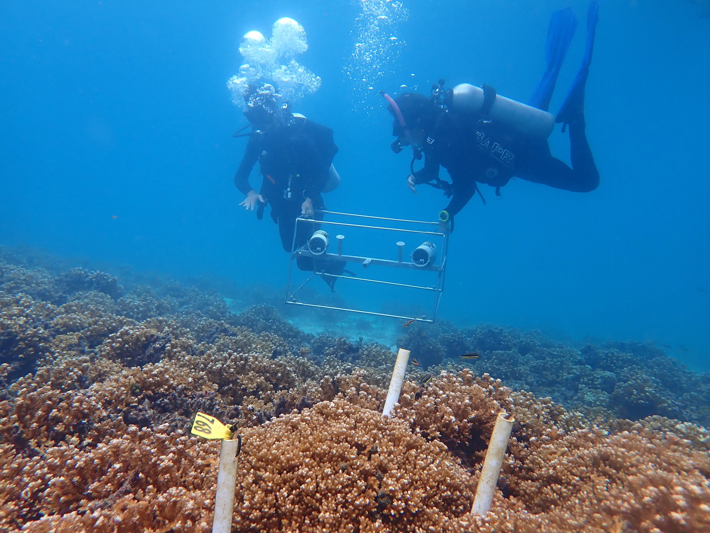
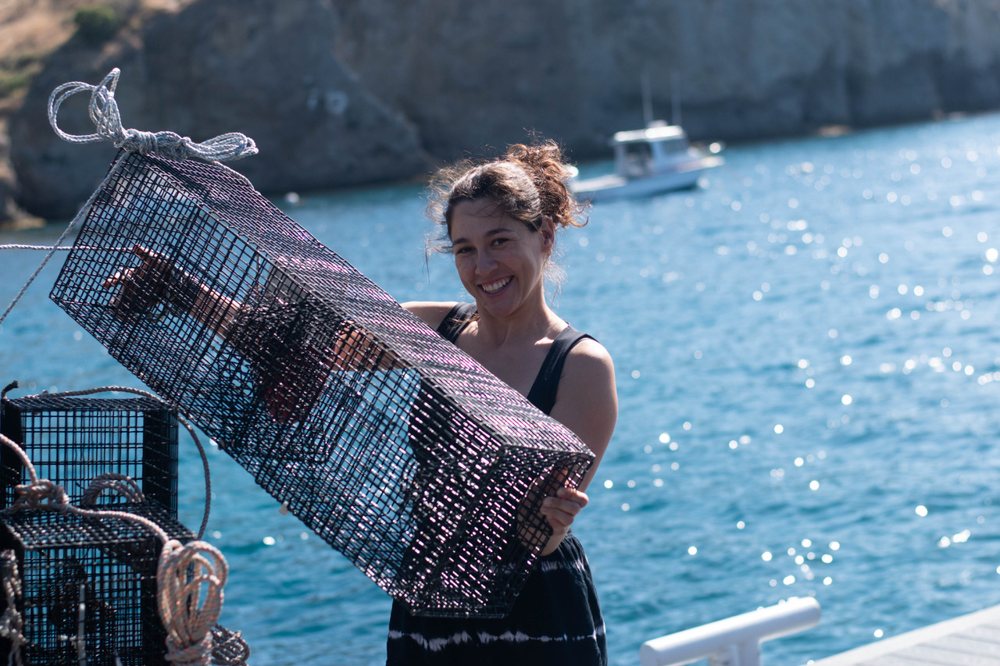

📬 Interested in Joining?
We are always looking for motivated, collaborative, and creative students to join the Symbiosis & Resilience Lab at the University of Hong Kong (HKU).
All interested applicants should email Dr. Matthieu Leray (leraym@hku.hk) with a brief description of their research interests, academic background, and CV before submitting an application. Early contact is strongly encouraged to discuss potential projects and funding opportunities.
🌊 Desired Qualifications
We seek students who are curious, responsible, and enthusiastic about collaborative research in marine ecology and evolution.
- Degree: BSc or MPhil in Biology (preferably with coursework in marine ecology/biology).
- Academic record: ideally a GPA > 3.5 to be competitive for postgraduate fellowships and demonstrated research experience.
- Teamwork: Excellent communication and interpersonal skills; ability to work well with others and contribute to a positive, inclusive lab culture.
- Independence: High motivation and capacity to work independently; students who take initiative and think creatively.
- Adaptability: Willingness to learn new skills, work across disciplines, and apply a range of field and laboratory tools (not limited to molecular methods).
- Background: Experience in marine ecology and/or bioinformatics is desirable.
- Fieldwork: Willingness to conduct fieldwork, sometimes in remote tropical locations.
- Diving: Scuba diving certification is an asset but not required.
- Language: Proficiency in English (spoken and written).
Highly qualified applicants (typically GPA > 3.5 and with prior research experience) are encouraged to apply for competitive postgraduate fellowships, with a strong emphasis on recruiting international students.
🎓 Fellowship Opportunities
Hong Kong PhD Fellowship Scheme (HKPFS)

The HKPFS, administered by the Hong Kong Research Grants Council (RGC), is the most prestigious award for PhD study in Hong Kong.
It provides:
- HK $28,400 per month (≈ US $3,630) for up to three years (HKU may extend support to a fourth year if needed).
- HK $14,200 per year (≈ US $1,820) in conference and research-travel allowance.
This fellowship targets applicants with a strong academic record, demonstrated research experience, and excellent communication skills.
All HKPFS applicants to HKU are automatically considered for the complementary HKU Presidential PhD Scholar Programme (HKU-PS).
🗓️ Application deadline (HKPFS): December 1st each year (for admission in September of the following year).
Applicants must first register with the RGC and then submit their PhD application to HKU (see detailed guidelines below).
HKU Presidential PhD Scholar Programme (HKU-PS)

All HKPFS awardees at HKU also receive the HKU-PS Scholarship, which provides additional benefits, including:
- A cash award of HK $40,000 (≈ US $5,100) in Year 1 and HK $20,000 (≈ US $2,550) per year thereafter.
- A guaranteed hall residence during the first year, with the possibility of renewal.
Exceptional PhD applicants who do not receive the HKPFS may still be offered the HKU-PS as an internal university-level entrance award.
Note: Applicants do not need to apply separately for the HKPFS and the HKU-PS.
When applying for a full-time PhD at HKU, eligible candidates who apply for the HKPFS will be automatically considered for both awards.
Those not selected for the HKPFS remain eligible for admission and support under the HKU-PS or the standard Postgraduate Studentship (PGS) - see below.
🗓️ Application deadline (HKU-PS Main Round): December 1st each year (for admission in September of the following year).
Late applications may be considered under the Rolling Admission system until April.
Postgraduate Studentship (PGS)

The PGS is the standard funding package awarded upon admission to eligible full-time MPhil and PhD students who are not supported by HKPFS or HKU-PS.
It provides a monthly stipend of approximately HK $19,000 (≈ US $2,430) to support living expenses for the duration of study.
Applicants holding at least a Second Class Honours (First Division) or equivalent in their first degree (or a relevant Master’s) are eligible.
You do not apply separately for the PGS. Admission to a full-time research degree automatically includes consideration for this studentship.
🗓️ Application deadline (PGS/General PhD Admission): December 1st each year (for admission in September of the following year).
Late applications are accepted until April, but early submission increases chances of funding.
External Funding
Students who have secured external fellowships or sponsorships are also welcome to join the lab.
The same eligibility standards apply: a strong academic record (GPA > 3.5) and prior research experience.
🧾 How to Apply
Applicants interested in joining the Symbiosis & Resilience Lab at HKU should apply through the University of Hong Kong’s online PhD or MPhil admission system.
All eligible applicants are automatically considered for the available funding opportunities — you do not need to submit separate forms for each scholarship. Below are step-by-step guidelines.
1️⃣ Apply to the Research Grants Council (RGC) - for HKPFS only
- Register and apply through the official RGC portal:
👉 https://cerg1.ugc.edu.hk/hkpfs/apply.html
- You may select up to two universities and specify your preferred PhD programs.
- After submission, you will receive an HKPFS Reference Number (e.g., PF26-XXXXX).
2️⃣ Apply to HKU - for admission and internal fellowships
- Complete the HKU online application for the PhD or MPhil programme and, if applicable, include your HKPFS Reference Number.
- HKU will automatically link your applications and consider you for:
- the HKPFS (funded by the RGC),
- the HKU Presidential PhD Scholar Programme (HKU-PS) top-up package, and
- the Postgraduate Studentship (PGS), HKU’s standard studentship awarded upon admission to eligible full-time research students.

- the HKPFS (funded by the RGC),
Note: Applicants do not need to apply separately for the HKPFS and the HKU-PS.
All eligible candidates applying for the HKPFS through the RGC and listing HKU as a preferred university will be automatically considered for both awards.
Those who are not selected for the HKPFS or HKU-PS remain eligible for support under the PGS.
Early contact with a potential supervisor is strongly encouraged, as HKPFS nominations must be supported by the host department.